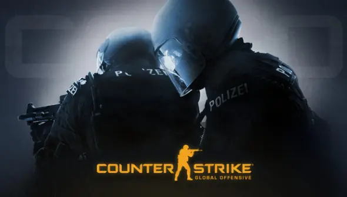

Developed by Riot Games, League of Legends is a MOBA (Multiplayer Online Battle
Arena) that is arguably the most structured and commercially successful esport on Earth.
Riot Games controls the entire ecosystem, from the game itself to the global professional
leagues (like the LCK in Korea, LPL in China, and LEC in Europe).
LoL’s success is measured in its staggering global viewership.
Viewership: The 2023 League of Legends World Championship final peaked at
6.4 million concurrent viewers (excluding data from Chinese platforms, which
would make it far higher).
Prize Pool: While not the highest, the 2023 Worlds prize pool was $2.225 mil-
lion, with players also earning a share of in-game content sales.
Franchising: Riot has created a franchised league system, similar to traditional
sports, where teams buy a permanent spot in the league, ensuring stability for
owners and players.
Counter Strike
Counter-Strike (Valve) is the legacy esport. This tactical first-person shooter has been
the pinnacle of skill-based competition for over two decades. Unlike LoL, its ecosystem
is "open," with third-party tournament organizers like ESL and BLAST hosting massive
events.
CS ’s success is its longevity and the raw, undiluted purity of its gameplay.
Player Base: Before its update to Counter-Strike 2, CS:GO hit an all-time peak
of 1.8 million concurrent players in 2023, proving its relevance.
Prize Pools & Viewership: The "Majors" are the most prestigious events. The
BLAST Paris Major 2023 featured a $1.25 million prize pool and drew over 1.5
million peak viewers.
Skill: The game is famous for its high skill ceiling. Its economy system and map-
based strategy make it a "chess match with guns," perfect for high-drama spectat-
ing.

LoL VS CS
League of Legends is the"best" exampleof a"walledgarden" esport—aperfectlycurated,
developer-controlled product that delivers massive, polished spectacles. Counter-Strike
is the "best" example of a pure, community-driven esport, where the game’s timeless,
balanced design creates drama and storylines that have spanned generations.